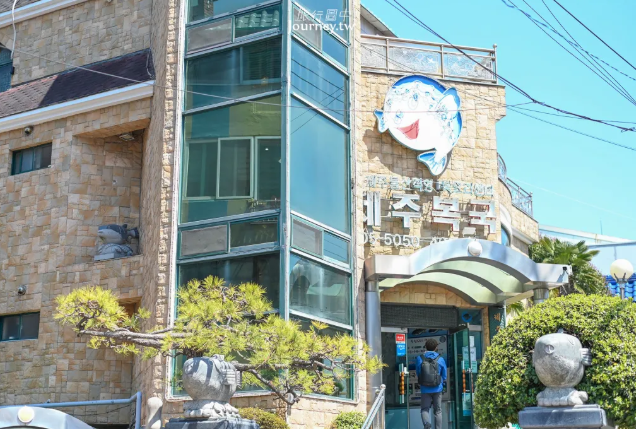
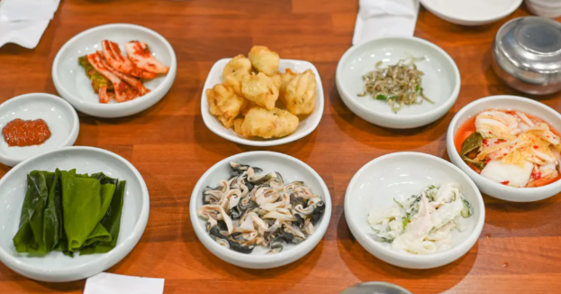
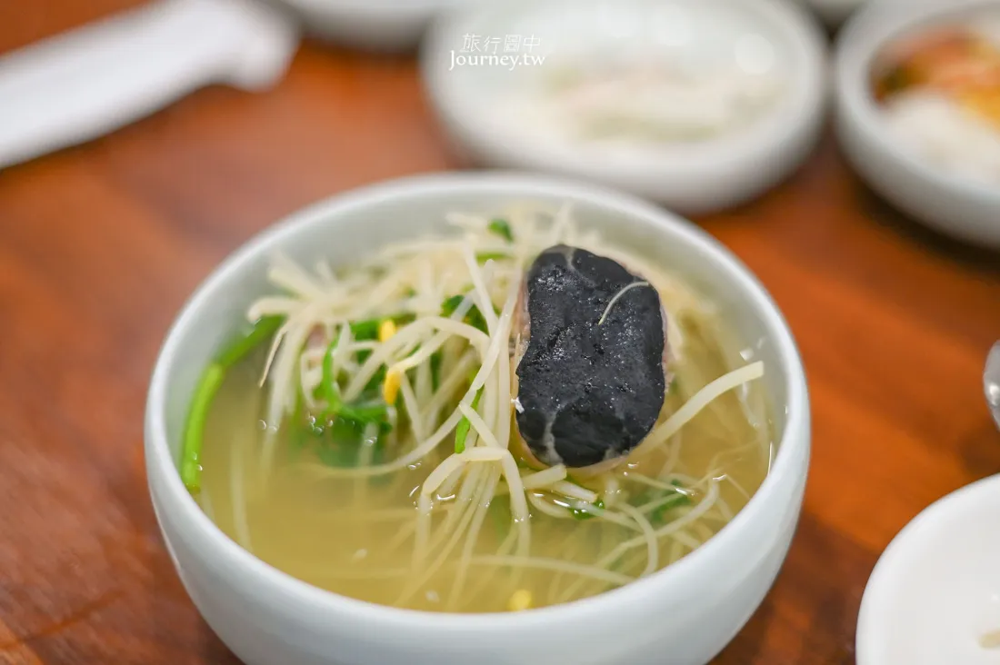
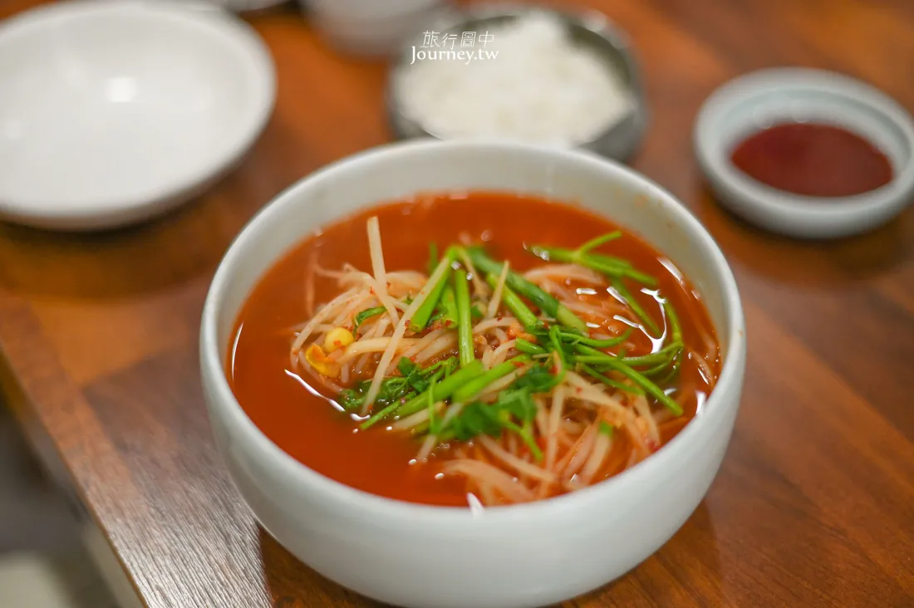

初見釜山 · 牽手散步日
抵達後第一站！暖暖的豬肉湯飯與夜間散策 ✨
韓國首座綜合性海洋博物館，外觀以「水滴」為靈感打造。館內共4層樓，最受歡迎的是3樓擁有390噸水量的「360度圓形海底隧道水族館」，可近距離觀察鯊魚、魟魚與海龜。館內還設有航海歷史文物、兒童海洋體驗館及海景展望台，是影島最具代表性的免費室內景點。


- 地鐵 1 號線至「南浦站」下車，從 6 號出口出站後，轉乘市區公車 66 號或 186 號，即可一路直達「國立海洋博物館」站
- 計程車：目的地輸入「국립해양박물관」或是韓文地址「부산광역시 영도구 해양로301번길 45」
- 3樓圓形水族箱每日固定有餵食秀（潛水員餵食展示），通常在上午與下午各有一場，入場時可先至服務台確認當日時刻表。
- 館內設有置物櫃與無障礙電梯，推嬰兒車或攜帶大型行李也能輕鬆參觀。
- 2樓設有「兒童海洋博物館（어린이박물관）」，若有帶小朋友同行建議先於現場或官網預約場次。
草梁洞與釜山站周邊極具口碑的在地老字號！以整隻新鮮嫩雞搭配大量青蔥、馬鈴薯與秘製清甜高湯熬煮，湯頭甘醇鮮美、不油不膩。雞肉軟嫩多汁，沾上特製辣醬、黃芥末、醬油與高麗菜絲調配的靈魂沾醬更是一絕。最後加入刀削麵與煮成海苔雞蛋粥（죽）是老饕必吃的經典收尾。


- 從南浦站８號出口，走路過去１１分鐘
- 南浦站６號出口處，轉搭乘６、７、１７、１１３號巴士過影島大橋
- 靈魂沾醬吃法：依店家推薦比例將「辣椒醬＋黃芥末＋醬油醋＋蒜泥」混合均勻，拌入爽脆高麗菜絲，搭配雞肉一起入口最道地解膩。
- 二段式收尾：雞肉與馬鈴薯吃完後，務必先加點刀削麵（칼국수）吸附濃郁雞湯精華，最後再請店員加入白飯、海苔與雞蛋煮成精華粥（죽）。
- 用餐尖峰時段常有在地上班族聚餐，建議提早抵達或稍微避開正餐尖峰期以減少候位時間。
坐落於影島海岸邊的道地海味聚落，由在地海女阿姨每日現捕新鮮海鮮。坐在礁岩海岸旁吹著海風，品嚐招牌「紫菜包飯＋生海膽」與熱騰騰海鮮拉麵，體驗最粗獷純粹的釜山海濱風情。


- 從地鐵南浦站6號出口轉508 / 7 / 71號公車到南高橋站（남고교）步行7分鐘
- 從地鐵釜山站7號出口轉508號公車到南高橋站（남고교）步行7分鐘
- 戶外岩石座位區地面高低不平且臨海，行走與端托盤時請特別注意腳下安全。
- 必點吃法：點一份紫菜包飯（김밥）與新鮮海膽（성게알），自行將海膽鋪在飯捲上享用，鮮甜美味。
- 戶外臨海區風勢通常較大，建議攜帶防風薄外套，用餐時也請壓好輕便餐具與紙巾。
依山傍海的「釜山聖托里尼」，沿著絕壁海岸步道漫步，穿梭在彩繪階梯、海景咖啡廳與特色文創小店之間，盡情享受蔚藍海景與文藝氛圍。


- 此處為實際居民生活區，參觀時請保持安靜、勿打擾住戶。
- 沿途階梯與坡道多，建議穿著好走的平底鞋或布鞋。
- 熱門打卡點「白淺灘海岸隧道」常需排隊拍照，建議預留充足時間。
由影島舊造船廠或老舊工業倉庫改造而成的複合式海景藝文咖啡廳！保留了粗獷的水泥鋼構與挑高空間，融合現代設計美學與藝術展覽。店內擁有整面超大落地觀景窗，能將釜山港海景、停泊船隻與壯麗的影島大橋／釜山港大橋盡收眼底，是影島極具氛圍感的打卡熱點。
- 地鐵 釜山1號線南浦站8號出口 → 於釜山港灣公社公車站轉乘88-1路公車 → 在Homeplus公車站下車，步行2分鐘
- 最佳拍照位：靠窗第一排海景沙發區光線絕佳，午後至傍晚人潮較多，若想坐窗景第一排建議提早抵達或稍作等候。
- 建築內部保留部分工業階梯與挑高挑空設計，行走與拍照時請留意腳下階梯。
海雲台 · 浪漫日落海景列車
坐著彩色膠囊列車看海，晚上吃青沙浦現烤海鮮 🦪
釜山超人氣海景打卡景點！搭乘行駛在高架鐵軌上的彩色復古單軌膠囊列車，在 7–10 公尺高空中以慢速漫遊，悠閒俯瞰無邊際的蔚藍海景與沿岸松林風光。


- 熱門時段與夕陽班次極為搶手，強烈建議提早 2 至 4 週至官網預約購票。
- 單程行車時間約為 30 分鐘（時速約 5 km/h），車廂內無冷氣、僅設有小電扇與通風窗。
- 抵達青沙浦站後，可順道打卡「青沙浦灌籃高手平交道」與品嚐烤貝海鮮。
釜山最具代表性的地標級海灘！長達 1.5 公里的潔白細沙灘與高聳的現代摩天大樓群相互輝映。無論是沿著木棧道漫步吹海風、餵海鷗，還是欣賞壯麗的海岸天際線，都能感受釜山專屬的悠閒海濱渡假氣息。

- 沙灘鄰近海雲台傳統市場與冬柏島散步道，建議可串聯安排在同一半日行程。
- 冬季至初春常有大量海鷗聚集，若購買蝦味先餵食需注意周遭海鷗群飛。
- 海邊風勢普遍較大，春秋冬季建議攜帶防風保暖外套。
影島與南浦洞一帶極具人氣的燉牛肋排專門店！招牌燉牛肋排（소갈비찜）燉煮得軟嫩入味、骨肉輕輕一夾即可分離。濃郁甘甜的特製秘醬帶有淡淡果香與芝麻香，拌飯吃堪稱白飯小偷，還可搭配滿滿拔絲起司與現烤大蔥，是在地人與旅客都盛讚的道地韓式肉食料理。


- 搭乘釜山地鐵2號線至海雲台站（해운대역），從 4號或2號出口 出站，步行約 2 分鐘（約 129 公尺）往舊火車站方向、越過鐵軌後的紅磚建築2樓即可抵達
- 辣度可自選：點餐時通常可選擇微辣（순한맛）、普通辣（보통맛）或大辣（매운맛），不敢吃辣者建議選擇微辣或普通辣。
- 加起司更美味：強烈推薦加點起司（치즈사리），鋪在牛肋排上炙烤融化後拉絲濃郁，能完美中和醬汁的微辣感。
- 壓軸必吃炒飯：肉塊吃得差不多後，記得留下少許醬汁請店家加入海苔、麻油與白飯做成鐵板炒飯（볶음밥）收尾。
釜山極具代表性的 24 小時老字號豬肉湯飯名店！以 100% 國內產豬骨長時間大火熬製成濃郁乳白色的醇厚高湯，完全沒有豬腥味。鍋內鋪滿鮮嫩扎實的豬肉切片與扎實飽滿的手工血腸，熱氣騰騰、份量十足，是無論清晨早午餐或深夜宵夜都能隨時暖胃的經典美食。


- 海雲台店（離埃爾莫門託最近）：從地鐵2號線海雲台站 5號出口直走步行約 3–5 分鐘（位於九南路主要大街上）。
- 南浦／釜山站分店：搭乘地鐵1號線至鄰近商圈站點，步行約 3–5 分鐘即達。
- 在地調味秘訣：上桌時湯頭原味較淡，建議依個人口味加入蝦醬（새우젓）提鹹鮮味、辣醬（다대기）增香，並趁熱將涼拌韭菜（부추무침）與隨附的麵線（소면）整坨丟入湯中攪拌。
- 多種部位可選：若不敢吃內臟或血腸，可直接點純「豬肉湯飯（돼지국밥）」；若想吃切片三層肉沾醬包生菜，推薦點「白切肉定食（수육백반）」。
- 自助吧檯（Self Bar）提供蒜頭、青椒、洋蔥、泡菜與辣蘿蔔，吃不夠可自行免費續加。
海雲台最知名的超人氣厚切熟成烤肉名店！嚴選高品質韓國產熟成五花肉與厚切豬頸肉，由專業店員提供全程代烤桌邊服務，精準掌控火候將外皮烤得金黃酥脆、內裡肉汁滿溢。附贈滿桌精緻小菜，搭配招牌大醬湯或冷麵一起享用，是海雲台大口吃肉的排隊首選。


- 釜山地鐵「203海雲台站」3號出口，步行約3分鐘
- 專人桌邊代烤：店員會負責將肉塊烤至最佳熟度並剪成適口大小，客人無需自己動手，只需安心享用。
- 經典吃法組合：將烤至酥香的五花肉沾取特製粗鹽、芥末或包肉醬，搭配烤過的水泡菜、紫蘇葉與醃蔥絲一起包著吃，清爽解膩。
- 韓國烤肉店基本規定首次點餐至少須點 3 份肉品起（3人份），即使 2 人用餐也是點 3 份肉為基準。
韓國知名的連鎖熟成頂級豬肉專門店，店名「高飯」寓意為「高水準的完美一餐」。主打高規格低溫熟成五花肉、橫膈膜肉（海鷗肉）與特級豬頸肉，並由受過專業訓練的店員提供全程代烤桌邊服務。滿桌提供蕨菜、明品名產泡菜與多款特調沾醬，層次豐富且口感軟嫩多汁。


- 釜山地鐵二號線至海雲台站（해운대역） 5號出口，步行約3分鐘路程
- 專人桌邊代烤：店員全程幫忙烤肉、剪肉，並會將烤熟的肉品放在邊緣保溫石盤上，免動手就能享用最佳熟度。
- 烤蕨菜獨家吃法：店員代烤時會將智異山野生蕨菜（고사리）放上烤盤微煎，與厚切五花肉、名品明太魚子醬或芥末一起包著吃，風味絕佳。
- 點餐建議：初次造訪推薦直接選擇「高飯綜合套餐（고반세트）」，一次嚐遍五花肉、豬頸肉等多種經典熟成部位。
小王子約會 & 懸崖海景咖啡
漫步在彩繪小村莊，邊看海邊發呆的午後 ☕
穿梭彩色小屋，排隊和小王子與狐狸留下專屬背影照。
蔚藍懸崖步道，找一間大面落地窗的咖啡廳坐著看海吃甜點。
一人吃一個熱騰騰的堅果黑糖餅，挑選情侶紀念品。
伴手禮打包 · 滿滿幸福回家
裝滿整箱戰利品與滿滿的幸福回憶 ✈️
杏仁果、布朗尼、海苔、辛拉麵大掃貨，行李箱塞滿滿！
辦理退稅手續，帶著滿滿的回憶平安回家 💕
所有餐廳來這裡看
草梁洞與釜山站周邊極具口碑的在地老字號！以整隻新鮮嫩雞搭配大量青蔥、馬鈴薯與秘製清甜高湯熬煮，湯頭甘醇鮮美、不油不膩。雞肉軟嫩多汁，沾上特製辣醬、黃芥末、醬油與高麗菜絲調配的靈魂沾醬更是一絕。最後加入刀削麵與煮成海苔雞蛋粥（죽）是老饕必吃的經典收尾。
- 從南浦站８號出口，走路過去１１分鐘
- 南浦站６號出口處，轉搭乘６、７、１７、１１３號巴士過影島大橋
- 靈魂沾醬吃法：依店家推薦比例將「辣椒醬＋黃芥末＋醬油醋＋蒜泥」混合均勻，拌入爽脆高麗菜絲，搭配雞肉一起入口最道地解膩。
- 二段式收尾：雞肉與馬鈴薯吃完後，務必先加點刀削麵（칼국수）吸附濃郁雞湯精華，最後再請店員加入白飯、海苔與雞蛋煮成精華粥（죽）。
- 用餐尖峰時段常有在地上班族聚餐，建議提早抵達或稍微避開正餐尖峰期以減少候位時間。
坐落於影島海岸邊的道地海味聚落，由在地海女阿姨每日現捕新鮮海鮮。坐在礁岩海岸旁吹著海風，品嚐招牌「紫菜包飯＋生海膽」與熱騰騰海鮮拉麵，體驗最粗獷純粹的釜山海濱風情。
- 從地鐵南浦站6號出口轉508 / 7 / 71號公車到南高橋站（남고교）步行7分鐘
- 從地鐵釜山站7號出口轉508號公車到南高橋站（남고교）步行7分鐘
- 戶外岩石座位區地面高低不平且臨海，行走與端托盤時請特別注意腳下安全。
- 必點吃法：點一份紫菜包飯（김밥）與新鮮海膽（성게알），自行將海膽鋪在飯捲上享用，鮮甜美味。
- 戶外臨海區風勢通常較大，建議攜帶防風薄外套，用餐時也請壓好輕便餐具與紙巾。
草梁洞與釜山站周邊極具口碑的在地老字號！以整隻新鮮嫩雞搭配大量青蔥、馬鈴薯與秘製清甜高湯熬煮，湯頭甘醇鮮美、不油不膩。雞肉軟嫩多汁，沾上特製辣醬、黃芥末、醬油與高麗菜絲調配的靈魂沾醬更是一絕。最後加入刀削麵與煮成海苔雞蛋粥（죽）是老饕必吃的經典收尾。




- 計程車：若從「南浦站」或「釜山站」出發，直接搭乘計程車是最省時省力的選擇
- 地鐵 1 號線至 南浦站（남포역）> 從 6 號出口出站後，步行至附近的公車站牌，轉乘 6 號、7 號、9 號、30 號、71 號或 508 號公車 進入影島 > 於 「東三中學（동삼중학교）」 或 「咸池谷修煉館（함지골수련원）」 站下車，再步行約 5–10 分鐘即可抵達餐廳
影島與南浦洞一帶極具人氣的燉牛肋排專門店！招牌燉牛肋排（소갈비찜）燉煮得軟嫩入味、骨肉輕輕一夾即可分離。濃郁甘甜的特製秘醬帶有淡淡果香與芝麻香，拌飯吃堪稱白飯小偷，還可搭配滿滿拔絲起司與現烤大蔥，是在地人與旅客都盛讚的道地韓式肉食料理。
- 搭乘釜山地鐵2號線至海雲台站（해운대역），從 4號或2號出口 出站，步行約 2 分鐘（約 129 公尺）往舊火車站方向、越過鐵軌後的紅磚建築2樓即可抵達
- 辣度可自選：點餐時通常可選擇微辣（순한맛）、普通辣（보통맛）或大辣（매운맛），不敢吃辣者建議選擇微辣或普通辣。
- 加起司更美味：強烈推薦加點起司（치즈사리），鋪在牛肋排上炙烤融化後拉絲濃郁，能完美中和醬汁的微辣感。
- 壓軸必吃炒飯：肉塊吃得差不多後，記得留下少許醬汁請店家加入海苔、麻油與白飯做成鐵板炒飯（볶음밥）收尾。
釜山極具代表性的 24 小時老字號豬肉湯飯名店！以 100% 國內產豬骨長時間大火熬製成濃郁乳白色的醇厚高湯，完全沒有豬腥味。鍋內鋪滿鮮嫩扎實的豬肉切片與扎實飽滿的手工血腸，熱氣騰騰、份量十足，是無論清晨早午餐或深夜宵夜都能隨時暖胃的經典美食。
- 海雲台店（離埃爾莫門託最近）：從地鐵2號線海雲台站 5號出口直走步行約 3–5 分鐘（位於九南路主要大街上）。
- 南浦／釜山站分店：搭乘地鐵1號線至鄰近商圈站點，步行約 3–5 分鐘即達。
- 在地調味秘訣：上桌時湯頭原味較淡，建議依個人口味加入蝦醬（새우젓）提鹹鮮味、辣醬（다대기）增香，並趁熱將涼拌韭菜（부추무침）與隨附的麵線（소면）整坨丟入湯中攪拌。
- 多種部位可選：若不敢吃內臟或血腸，可直接點純「豬肉湯飯（돼지국밥）」；若想吃切片三層肉沾醬包生菜，推薦點「白切肉定食（수육백반）」。
- 自助吧檯（Self Bar）提供蒜頭、青椒、洋蔥、泡菜與辣蘿蔔，吃不夠可自行免費續加。
海雲台最知名的超人氣厚切熟成烤肉名店！嚴選高品質韓國產熟成五花肉與厚切豬頸肉，由專業店員提供全程代烤桌邊服務，精準掌控火候將外皮烤得金黃酥脆、內裡肉汁滿溢。附贈滿桌精緻小菜，搭配招牌大醬湯或冷麵一起享用，是海雲台大口吃肉的排隊首選。
- 釜山地鐵「203海雲台站」3號出口，步行約3分鐘
- 專人桌邊代烤：店員會負責將肉塊烤至最佳熟度並剪成適口大小，客人無需自己動手，只需安心享用。
- 經典吃法組合：將烤至酥香的五花肉沾取特製粗鹽、芥末或包肉醬，搭配烤過的水泡菜、紫蘇葉與醃蔥絲一起包著吃，清爽解膩。
- 韓國烤肉店基本規定首次點餐至少須點 3 份肉品起（3人份），即使 2 人用餐也是點 3 份肉為基準。
韓國知名的連鎖熟成頂級豬肉專門店，店名「高飯」寓意為「高水準的完美一餐」。主打高規格低溫熟成五花肉、橫膈膜肉（海鷗肉）與特級豬頸肉，並由受過專業訓練的店員提供全程代烤桌邊服務。滿桌提供蕨菜、明品名產泡菜與多款特調沾醬，層次豐富且口感軟嫩多汁。
- 釜山地鐵二號線至海雲台站（해운대역） 5號出口，步行約3分鐘路程
- 專人桌邊代烤：店員全程幫忙烤肉、剪肉，並會將烤熟的肉品放在邊緣保溫石盤上，免動手就能享用最佳熟度。
- 烤蕨菜獨家吃法：店員代烤時會將智異山野生蕨菜（고사리）放上烤盤微煎，與厚切五花肉、名品明太魚子醬或芥末一起包著吃，風味絕佳。
- 點餐建議：初次造訪推薦直接選擇「高飯綜合套餐（고반세트）」，一次嚐遍五花肉、豬頸肉等多種經典熟成部位。
航班資訊
住宿安排
廣安-埃爾莫門託公寓 (엘모멘토 광安)
Naver Map
入住：2026/10/20 (16:00 後)
退房：2026/10/24 (11:00 前)
房型預訂：1 間 · 4 晚
地址：16 Gwangnam-ro 94beon-gil, 水營區, 釜山
(부산 수영구 광남로 94번길 16)
電話：+82-51-7540801